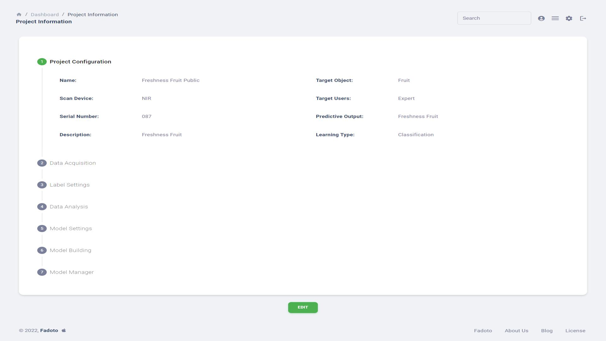

Innovate with a service-oriented website that manages and analyzes near-infrared spectral data of food. This solution replaces traditional methods by automating spectral data preprocessing, analysis, and machine learning model building. Users can conveniently choose from pre-built preprocessing steps and machine learning models, streamlining the experimentation process for various datasets without the need for manual code execution.
The website offers a selection of pre-built preprocessing steps, eliminating the need for users to manually code and execute these steps. Users can conveniently choose from a variety of preprocessing options tailored to their specific spectral data requirements.
Instead of coding and training machine learning models from scratch, the website provides a repository of pre-built models. Users can explore and choose from a range of machine learning models suitable for their data. This not only saves time but also allows users to experiment with multiple models effortlessly.
The platform features an intuitive user interface that enables users to navigate through different preprocessing options and machine learning models seamlessly. Users can interact with the system without the need for extensive coding knowledge, making it accessible to a broader audience.
Researchers and data scientists can experiment with various combinations of preprocessing steps and machine learning models for a given dataset. The platform facilitates easy comparison of results, empowering users to make informed decisions about the most effective approaches for their specific spectral data.
The traditional complexities associated with coding, executing, and troubleshooting each step are eliminated. Users can focus on the experimental aspect rather than dealing with the intricacies of code implementation, creating a more efficient and streamlined workflow.
Despite the automated nature of the platform, it allows for customization. Users can fine-tune parameters, explore advanced options, and adapt the preprocessing and modeling steps to suit the nuances of their spectral data.
The platform is designed to stay abreast of the latest advancements in spectral data analysis. Regular updates introduce new preprocessing techniques and machine learning models, ensuring users have access to state-of-the-art tools for their research.
